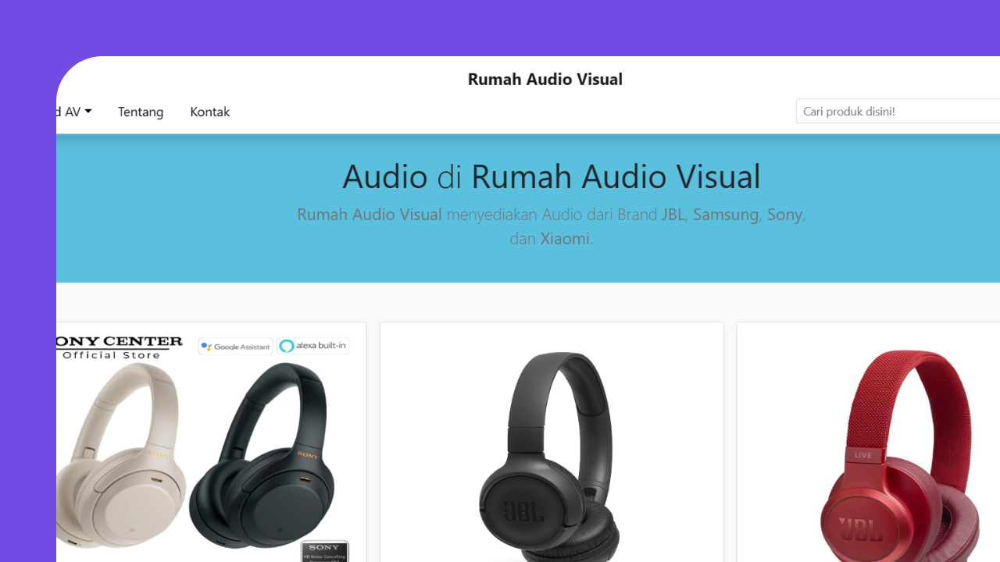
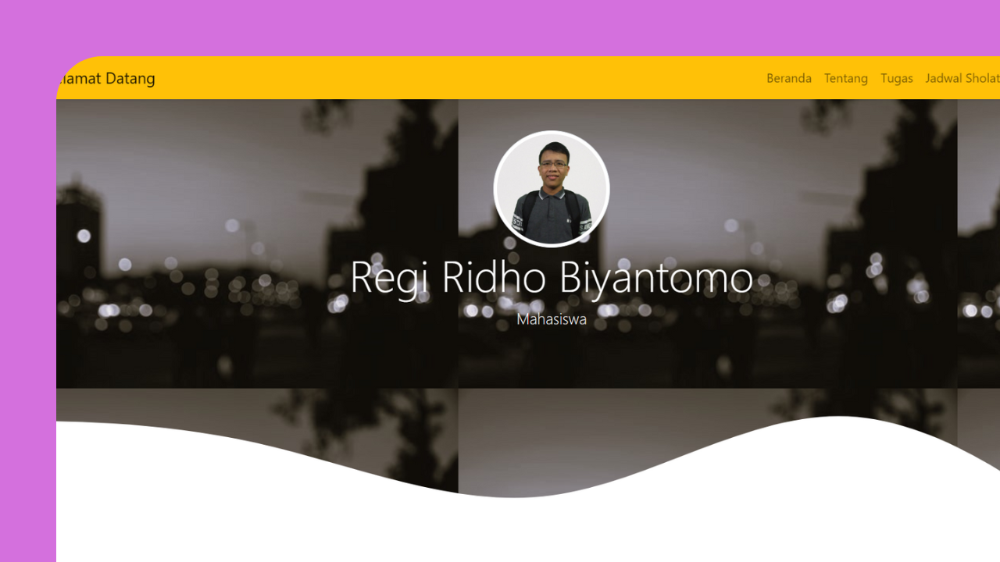
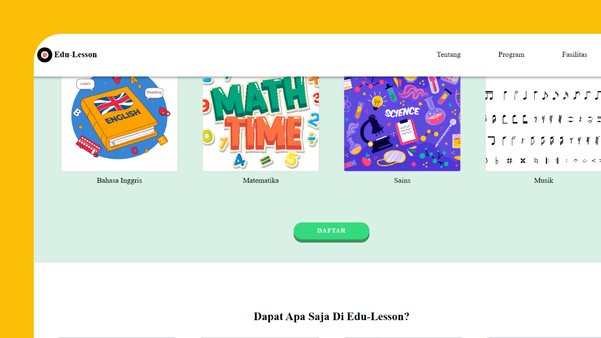
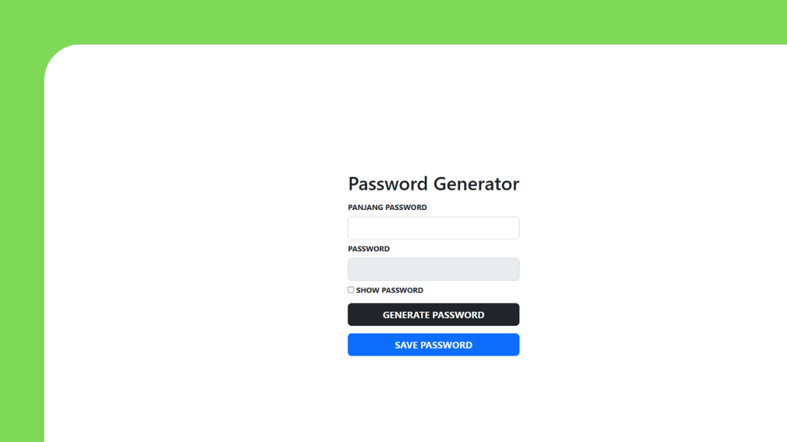
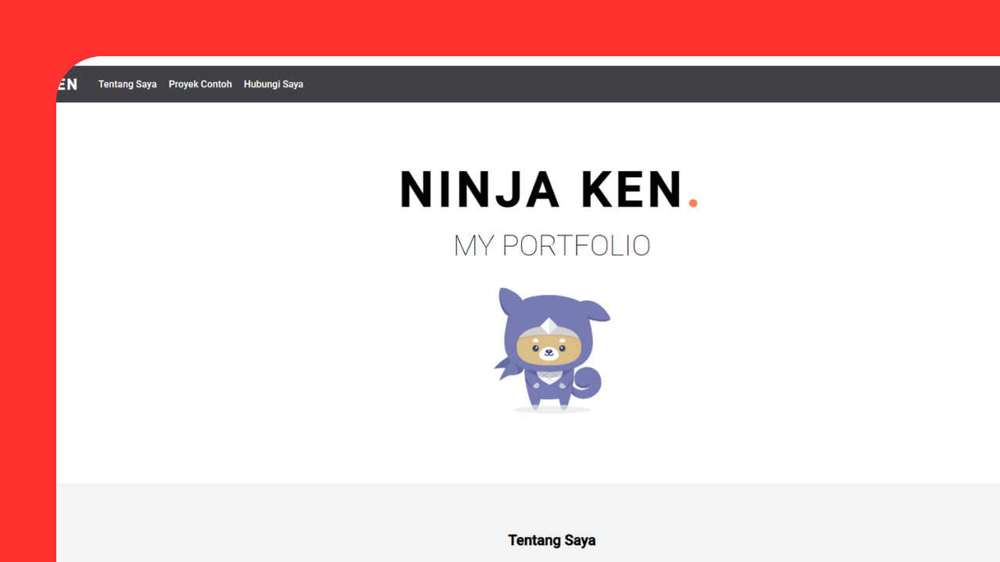

regi.Biyantomo

berisi daftar link tugas kuliah dan satu sistem absensi dari course bang Dea yang dibuat supaya gampang mengaksesnya.
dibuat dengan: HTML, CSS, Bootstrap, JavaScript, PHP, MySQL

portofolio pertama yang sederhana dibuat dengan ngikutin tutorial di Web Programming Unpas.
dibuat dengan: HTML, CSS, Bootstrap, JavaScript

membuat website responsive dengan tema bebas dan masing-masing orang ngerjain bagiannya.
dibuat dengan: HTML, CSS

pembuat kata sandi yang menggunakan karakter huruf, angka, dan simbol.
dibuat dengan: HTML, CSS, Bootstrap, JavaScript

latihan responsive web design dari progate bertemakan web portfolio ninja ken.
dibuat dengan: HTML, CSS
biasanya, saya mengerjakan frontend dan backend untuk tugas kuliah ataupun sekedar bermain. saat ini, saya sedang fokus pada frontend dengan mengikuti pelatihan Fresh Graduate Academy, Intro To Frontend Development yang diadakan oleh Kominfo bekerja sama dengan Progate. ini adalah beberapa bahasa dan alat yang saya gunakan dan masih saya pelajari.
HTML
CSS
JavaScript
PHP
MySQL
Bootstrap
Git
Github